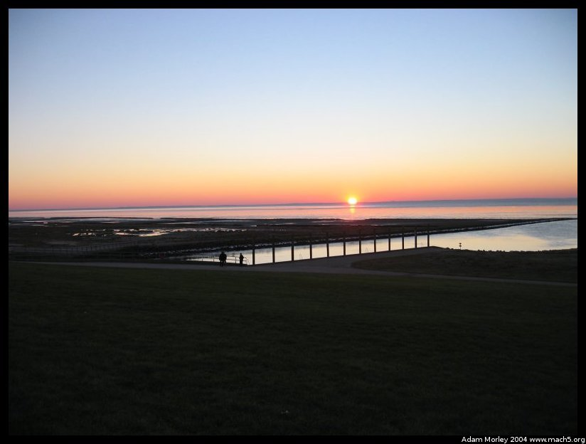

As I mention later on the Ribe page, much of south-western Denmark is protected by a series of locks, dikes and seawalls.
Interesting European language tidbit. The word for "lock" (wrt the water kind of lock, no the one on your door!) is the same in Danish and Dutch. I learned this from my host dad, Ole, who was once attempting to express the concept of a lock in Holland, and well, it just sort of worked out.
The land side of the locks, through the bug-splattered bus window.

Literally right on time.Crazy American college students!
The seaside of the locks.
Our bus! I didn't realize I even had a picture of it. "The Green Busses." I think.
Adam can be reached at adam dot morley at gmail dot com